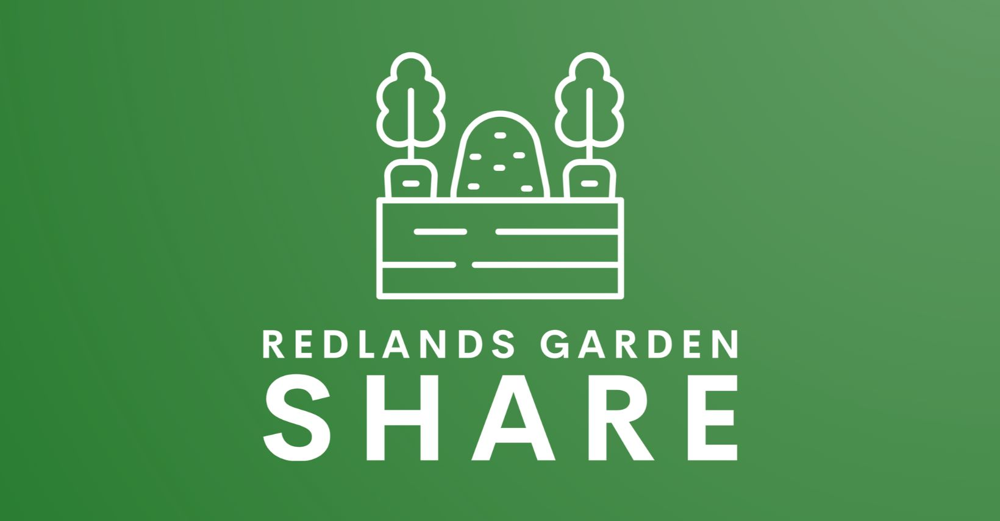

<html>
<head>
<title>Redlands Garden Share/title>
<link href='https://fonts.googleapis.com/css?family=Heebo' rel='stylesheet' type='text/css'>
<style type="text/css" media="screen">
<!--
* { margin: 0; padding: 0; }
body{
    font-family: 'Heebo', sans-serif;
    text-align: justify;
    height: 100%;
    line-height: 2.0;
}
a { 
    display: block;
}
.container {
    position: absolute;
    top: 50%;
    left: 50%;
    transform: translate(-50%, -50%);
} 
h1 {
    font-weight: normal;
    font-size: 1.4em;
    margin: 1em 0 0.5em 0;
}
--!>
</style>
</head>
<body>
<div class="container">
    <p><a href="https://www.facebook.com/groups/redlandsgardenshare"></img></a></p><br>
    The Redlands Garden Share has been established as a community and resource swap initiative, aimed at fostering self-reliance, sustainability, and community building. By sharing resources such as homegrown produce, seeds, edible plants, and more, we can reduce our waste, decrease dependence on supermarkets and decrease food miles, while also learning new skills and knowledge from your neighbours.
    <br>
    <br>
    Join our <a href="https://www.facebook.com/groups/redlandsgardenshare">Facebook group</a> where we post up events.
</body>
</html>
